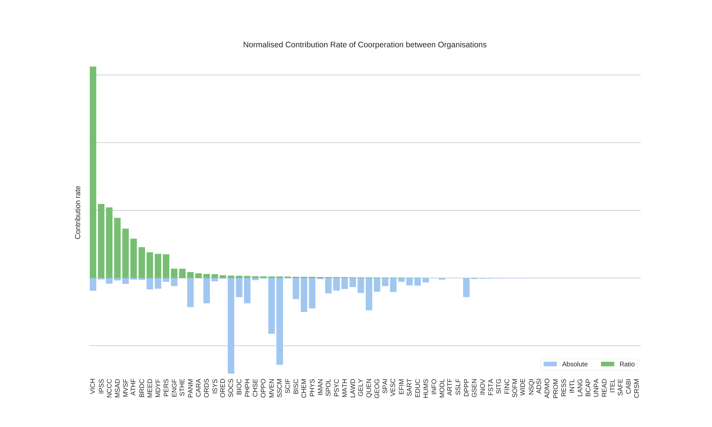
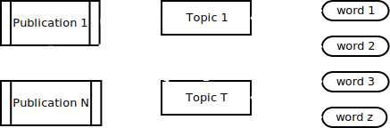

JGI PURE Challenge
What's in the data?
- 34,123 publications
- 2008 to 2013
- >14,000 no abstract
- >4,000 no authors
- ~2,000 duplicated titles
- ~3,000 Researchers
- ~450 Organizations
- UoB with 7 levels of hierarchy
From 2008 to 2013
34,123 Publications: 14,192 without Abstract,4,459 without authors, and
1987 using duplicate titles. 3263 Researchers from 448 nested
Organisations.
The organisation hierarchy of University of Bristol has 7 levels with
'UNIV' in level 0, and the only level 7 organisation is 'TSRC' (Transplantation Sciences (URC)).
Before we start analyzing
- Removed without authors
- Removed duplicates
- Organizations at 3rd hierarchical level
- In the PURE system 68 out of 133
We filtered out publications without authors and removed duplicates.
We also choose organisations at the 3rd level of the hierarchy to represent
the individual researchers, as we want to compare organisations at the same
level.
There are 133 organizations in the 3rd level, but only 68 of them have
submitted papers in the PURE system.
Who are likely cooperating with others?
- Undirected graph
- Edge == Organization
- Vertex == #publications in common
- Self-loops == no collaboration
We are interested in identifying the organizations that cooperate more with
the rest.
The following chord diagram shows the number of publications coauthored
between different organisations and the publications with no cooperation.
Cooperation Chord Diagram
How to rank organisations by cooperation?
- We propose two simple methods
- Absolute number of coauthored publications
- Org_1 = 10 + 3
- Ration of coauthored / no-coauthored
- Org_1 = (10 + 3) / 6
- Different rankings
We show the cooperation relations between organisations in the chord diagram,
but how can we rate their contributions to the cooperation atmosphere? How to
evaluate the tendency of organisations working with others?
The absolute number of publications coauthored with other organisations is one simplest way,
another is the ratio of coauthored publications to those solely worked inside the organisation.
These 2 criteria give us very different rankings, as we show the results in the
next slides. The rank 1 organisation is 'SOCS' (School of Clinical Sciences)
and 'VICH' (Senior Team) respectively. (The full name of 'VICH' is very
mysterious...)
How to rank organisations by cooperation?
How to rank organisations by cooperation?
- Absolute number of coauthored publications
- 1st: School of Clinical Sciences (SOCS)
- 2nd: School of Social and Community Medicine (SSCM)
- 3rd: Merchant Venturers' School of Engineering (MVEN)
- Ratio of coauthored / no-coauthored
- 1st: Senior Team (VICH)
- 2nd: Strategic Programmes and Projects (IPSS)
- 3rd: National Composites Centre (NCCC)
What's the popular research topic?
- Clustering: titles and abstracts
- Latent Dirichlet Allocation Topic Models 
We use Latent Dirichlet Allocation Topic Models to cluster publications of
each year by their titles and abstracts .
The discovered topics are visualised in the next slide, the X coordinate
represents how many researchers contributed to the topic, the Y coordinate
represents how many organisations contributed, the size of a topic circle
represents how many publications assigned to it. We also show top words and
top organisations of a topic.
Discovered Topics